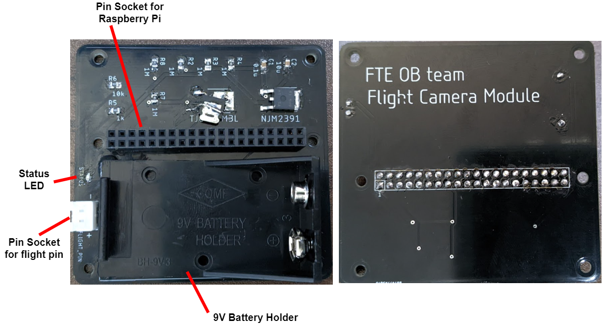
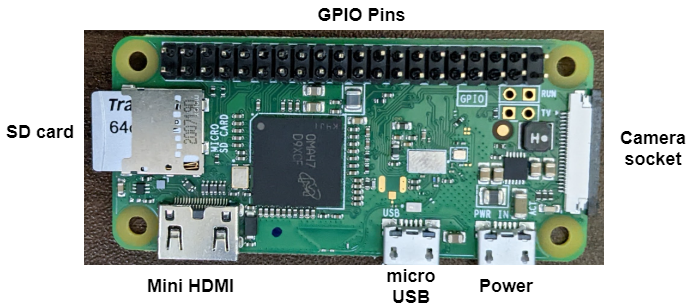
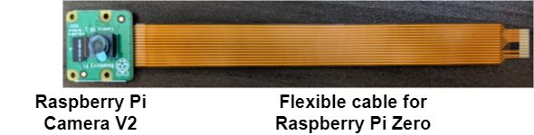
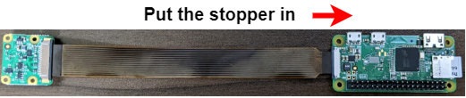
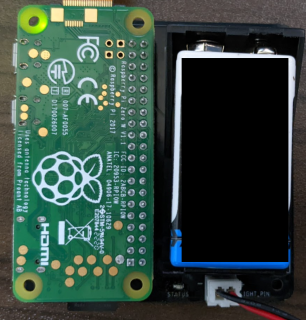

フライトカメラ
組み立て
こちらのページを参考にしてフライトカメラモードを有効化し終わったら、基板の組み立てを行います。このセクションでは部品とそれらの組み立てについて説明します。
基板の概要
下図はフライトカメラモジュールの基板です。このモジュールには以下のような特徴があります：
- ステータス LED でフライトカメラモードでのプログラムの状態を把握することが出来ます。
- XH ピンソケット はフライトピン用のインターフェースになっています。

Raspberry Pi Zero
Raspberrry Pi Zero （下図）は 40 個の GPIO ピンと HDMI や USB 、Raspberrry Pi Camera のようなインターフェースを持っています。Raspberrry Pi をセットアップする場合は、モニターとキーボードを接続することを推奨します。

モニターなしでの Raspberry Pi Zero のセットアップ
Raspberry Pi Zero にはモニターなしでセットアップを行う方法があります。しかし、セットアップ方法が複雑化することと問題が発生した場合に原因の特定が難しいことから、モニターを接続したうえでセットアップすることをおすすめします。
カメラの接続
-
Raspberry Pi Camera と Raspberry Pi Zero 用のフレキシブルケーブルを準備します。Raspberry Pi Zero 用のフレキシブルケーブルは Type A や Type B 用のものとは異なることに注意してください。 
-
Raspberry Pi Zero にはカメラソケットとそのストッパー（下図の黒い部分）が取り付けられています。ケーブルを挿入するためにストッパーを引き出します。

-
フレキシブルケーブルを挿入し、ストッパーを押し込んでケーブルを固定します。 
モジュールの組み立て
- Raspberry Pi Zero の GPIO ピンをピンソケットに挿入します。
- フライトピン用ケーブルを XH ピンソケットに接続します。
- 9V バッテリーをバッテリーホルダー内に入れます。すると、Raspberry Pi Zero が起動されます。 
プログラムの流れ
プログラム内での操作
- 起動とともにプログラムが実行されます。
- フライトピンが接続されるまでステータス LED が点滅します。

- フライトピンが接続されると、フライトピンが離脱するまでステータス LED が消灯します。
- フライトピンが離脱すると、ステータス LED が点灯し、録画が開始されます。
- 録画中にコマンドが有効化するかどうか監視します。
- giluem ファイル内の
timeoutパラメータに設定した秒数だけ経過するかコマンドが検知されると、録画が停止されます。 - コマンドが有効化されず
shutdown_after_recordingがTrueである場合、システムが自動シャットダウンされる。
コマンド
プログラムの状態を操作するために、いくつかのコマンドが用意されています。
| 名前 | 発動条件 | 概要 |
|---|---|---|
| NULL | --- | コマンドが1つも有効化されていない状態。 |
| RESTART | フライトピンが接続されて threshold_restart 秒以上が経過する. |
録画を停止し、直ちにプログラムを再起動する。threshold_restart パラメータは glm.py 内で設定可能で、デフォルトは5秒。 |
| EXIT | フライトピンが接続されて threshold_exit 秒以内に再度フライトピンが離脱し、その後 threshold_exit 秒以上経過する。 |
録画を停止し、シャットダウンせずにプログラムを終了する。threshold_exit パラメータは glm.py 内で設定可能で、デフォルトは2秒。 |
フローチャート
フローチャート内の赤字はパラメータの名前です。詳細については設定を参照してください。

出力
フライトカメラのプログラムは2種類のファイルを出力します。1つは動画ファイルであり、もう1つはログファイルです。
動画ファイル
動画ファイルはプログラムが出力する最も重要なファイルです。フライトカメラモードの有効化前に glm.py にて動画ファイルのパスを指定することが出来ます。詳細については設定を参照してください。
デフォルトの設定では、出力される動画ファイルのフォーマットは .h264 です。動画プレイヤーによっては、このフォーマットの動画を再生できない可能性があります。このフォーマットの動画の再生には VLC media player がおすすめです。しかし、 VLC で .h264 のフォーマットの動画を再生する場合にはブロックノイズが発生することがあるため、.h264 から .mp4 へ変換すると良いです（例えばこちらのサイトなどで行えます)。
ログファイル
ログファイルはアプリケーションの状態を解析する際に有用です。ログファイルのパスも glm.py にて指定できますが、詳細については設定を参照してください。
glm.py ではアプリケーションのログレベルも指定することが出来ます。詳細なログの出力を行うためには log_level パラメータに logging.DEBUG を指定します。
以下にログ出力の例を示します：
[2022-08-02 03:59:53,126] [INFO] Start the Flight camera mode. Setting; glm_name: main, timeout: 210.0, pin_flight: 22, pin_led: 12, file_mov: mov-220802-035953.h264, file_log: mov-220802-035953.log, parent_dir: None, resolution: (1920, 1080), framerate: 30, interval: 0.1, led_blink_freq: 2.0, log_level: 20, check_waiting_time: False
[2022-08-02 03:59:53,218] [INFO] Waiting a flight pin to be connected...
[2022-08-02 04:00:01,074] [INFO] Detected that the flight pin was connected.
[2022-08-02 04:00:01,075] [INFO] Wating the flight pin to be disconnected...
[2022-08-02 04:00:03,034] [INFO] Detected that the flight pin was disconnected.
[2022-08-02 04:00:03,034] [INFO] Start recording.
[2022-08-02 04:03:33,151] [INFO] Stop recording.
SD カードからのデータの取り出し
Windows ではそのフォーマットの違いから Raspberry Pi で使用した SD カード内のデータを認識できない可能性があります。以下では Raspberrry Pi に使用した SD カード内のデータを取り出すいくつかの方法を説明します。
3rd パーティー製のアプリケーションの利用
ext ファイルシステムを読み込むことが出来る以下のようなアプリケーションを使用すると、SD カード内のデータを取り出すことが出来ます：
HTTP で送信する
故障していない Raspberrry Pi がある場合、その Raspberrry Pi で WiFi 設定がなされていれば、SD カードをその Raspberrry Pi に挿入し、HTTP 通信によってデータを転送することが出来ます。
- Raspberrry Pi のネットワーク接続を有効にします。もしネットワーク設定がなされていない場合は、こちらのセクションを参考にして設定を行ってください。
- Raspberrry Pi の IP アドレスを確認します。
ip a # Example of output # ... # 2: wlan0: <BROADCAST,MULTICAST,UP,LOWER_UP> mtu 1500 qdisc mq state UP group default qlen 1000 # link/ether ff:ff:ff:ff:ff:ff brd ff:ff:ff:ff:ff:ff # inet 192.168.x.x/24 brd 192.168.x.255 scope global noprefixroute eth0 # ↑ this is the IP address. - カレントディレクトリを送信したいファイルがあるディレクトリに移します。
cd [/path/to/directory] # e.g. cd / - 先ほどの IP アドレスを指定して HTTP サーバーを起動します。
# Change the IP address to one of your environment. sudo python -m http.server -b 192.168.x.x 80 - Raspberrry Pi と同じネットワーク内にあるスマートフォンや PC 上でブラウザを起動します。
- 以下のような URL を入力してファイルをダウンロードします。
# Change the IP address to one of your environment. # Change the file name to one you want to send. http://192.168.x.x/[file_name]
SSH で送信する
故障していない Raspberrry Pi がある場合、その Raspberrry Pi で WiFi 設定がなされていれば、SD カードをその Raspberrry Pi に挿入し、SSH を利用してデータを転送することが出来ます。
- Raspberrry Pi のネットワーク接続を有効にします。もしネットワーク設定がなされていない場合は、こちらのセクションを参考にして設定を行ってください。
- SSH サーバーを有効化します：
sudo raspi-config # 1. Select [Interface Options] # 2. Select [SSH] # 3. Select [Yes] - Raspberrry Pi の IP アドレスを確認します。
ip a # Example of output # ... # 2: wlan0: <BROADCAST,MULTICAST,UP,LOWER_UP> mtu 1500 qdisc mq state UP group default qlen 1000 # link/ether ff:ff:ff:ff:ff:ff brd ff:ff:ff:ff:ff:ff # inet 192.168.x.x/24 brd 192.168.x.255 scope global noprefixroute eth0 # ↑ this is the IP address. - Raspberrry Pi と同じネットワーク上にある PC でターミナル（Windows の場合は PowerShell）を開き、以下のコマンドを実行します。
# Change the IP address to one of your environment. # Change paths in remote and local to ones you want to send and received. scp obteam@192.168.x.x:/path/to/file /local/path/to/file # Enter passphrase of the Raspberry Pi.